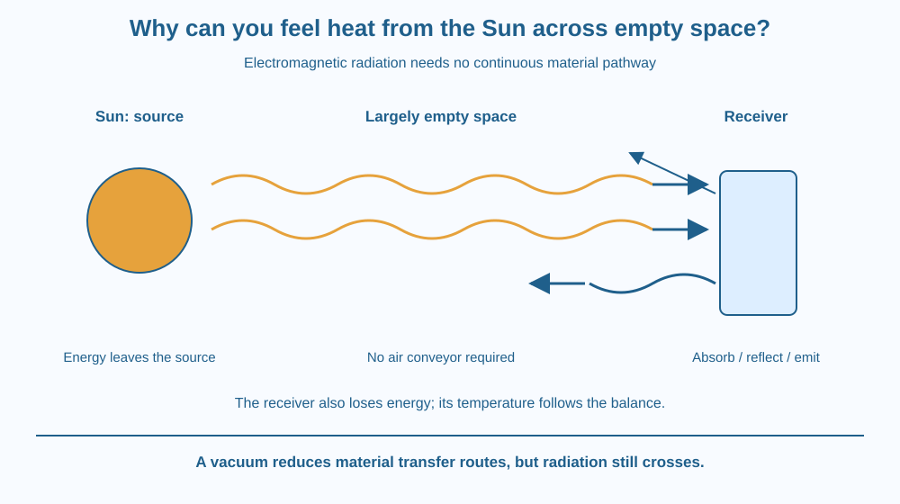

Explain how energy from the Sun crosses mostly empty space. Identify electromagnetic radiation, absorption and emission. Distinguish energy arriving at an object from the object's resulting temperature, and predict why an air gap cannot block every route of heat transfer.
Sunlight reaches Earth even though most of the space between Earth and the Sun contains extremely little matter. There is no continuous metal rod linking them and no stream of air carrying warmth all the way here.
Yet a sunlit surface can become warmer. What crossed the gap? This question exposes a limitation of models based only on contact between materials or the flow of liquids and gases.
A complete account of heat transfer needs a route that works without a material medium extending from source to receiver.
The Sun emits electromagnetic radiation. This radiation carries energy and can travel through a vacuum, a region without matter. In contrast, conduction requires material interactions, and convection requires a moving fluid.
Electromagnetic radiation includes visible light and infrared, among other kinds. Solar energy is not carried only by infrared. Visible sunlight also transfers energy when it is absorbed by a surface. The word thermal describes the energy-transfer context, not a separate substance called heat rays.
When radiation reaches an object, some may be reflected, some transmitted, and some absorbed. Reflection redirects energy away; transmission allows it through; absorption transfers energy into the material. What happens depends on the radiation's wavelength and the material's properties.
Absorbed energy can increase an object's internal energy and temperature. But temperature does not depend only on the rate of incoming radiation. The object also loses energy to its surroundings through radiation and, where matter is present, through other transfer routes.
An object can therefore receive radiation continuously while its temperature stays roughly steady. This happens when its incoming and outgoing energy transfers balance over the relevant time. Steady temperature is not proof that no energy is arriving.
Objects around us also emit radiation. A warm cup, a wall and a person's body are all emitters. Ordinary warm objects emit mainly at wavelengths our eyes do not detect. They do not have to glow visibly to transfer energy by radiation.
If two objects at different temperatures exchange radiation, each can emit toward the other. The net transfer is generally from the warmer object toward the cooler one, with the detailed exchange depending on their surfaces and surroundings. A one-way arrow in a simple drawing usually represents this net direction.
A vacuum reduces the conduction and convection pathways between separated surfaces, but it does not prevent radiation crossing the gap. This is why an insulating design may also need surfaces that reduce radiative exchange. “No air” and “no heat transfer” are not equivalent statements.
Draw a source and a receiver separated by a blank region. Use wavy arrows crossing the gap to represent radiation, without adding a chain of air particles or a connecting solid.
At the receiver, split the arriving arrow into reflected, transmitted and absorbed parts. The drawing should keep track of where energy goes rather than suggesting that every arriving ray must heat the receiver equally.
Finally add an outgoing arrow from the receiver. Compare the total arriving and leaving energy over a chosen interval. A larger incoming amount can warm it; balanced amounts can maintain a steady temperature. This energy account explains the receiver's behaviour more completely than an incoming arrow alone.
The SVG shows the Sun on the left and a receiving surface on the right, with a largely empty region between them. Wavy arrows cross the gap. Labels identify radiation as the carrier of energy.
At the surface, one arrow represents absorption and another reflection. A separate outgoing arrow represents emission by the receiver. The diagram does not use visible colour as a temperature scale or claim that only one wavelength is involved.
A small comparison crosses out a continuous air conveyor between the source and receiver. Radiation needs no such path, even though air can affect radiation travelling through the atmosphere near Earth.

A sunlit school courtyard and a shaded patch can feel different because the radiation reaching their surfaces differs. Their temperatures also depend on material, air movement and previous conditions. A simple shade comparison should not be turned into an invented universal temperature difference.
A vacuum flask uses a gap to reduce some transfer routes and suitable surfaces to limit radiation. Different parts of the flask address different mechanisms. The vacuum alone does not make the contents permanently immune to cooling.
Do not look at the Sun to investigate this lesson. The important observations concern illuminated surfaces and energy transfer, not direct viewing of the solar disc.
Use paper and three coloured pencils. There is no need for sunlight, hot objects or special equipment.
Label the arrows as an energy-accounting model rather than measured rays. Explain which receiver can warm and which can remain steady. The activity checks the mechanism without trying to estimate radiation by touching surfaces or exposing skin to sunlight.
Suppose an object receives a constant radiation input. At first it warms. Later its temperature becomes steady. Does that mean the incoming radiation stopped?
Use the outgoing energy routes to explain the change. Now imagine placing the object in a vacuum while leaving the radiation source unchanged. Identify which transfer routes are reduced and which can still operate across the gap.
Which transfer route can cross a vacuum?
Answer: A — Electromagnetic radiation can carry energy without a material medium.
Why can absorbed visible sunlight warm a surface?
Answer: C — Visible radiation carries energy that can enter a material when absorbed.
A receiver has steady temperature under constant radiation. What may explain this?
Answer: B — A steady temperature can result from a balance even while energy continues to arrive.
Design a labelled section through an insulated container. Include a gap with very little matter and surfaces chosen to reduce radiative exchange. Explain which feature addresses which transfer mechanism.
Do not claim that the container can keep its contents at exactly one temperature forever. Instead, identify the remaining pathways through supports, the opening and radiation. A useful design slows an energy transfer; it does not suspend the energy balance.
An object can emit energy that your eyes cannot see. Visible glow is not required for thermal radiation. This helps explain why a surface can lose energy by radiation in darkness and why looking for red or orange colour would miss much of the thermal exchange occurring around an ordinary room.
Radiation carries energy across empty space; absorption can warm a receiver, while its temperature depends on the balance of incoming and outgoing energy.